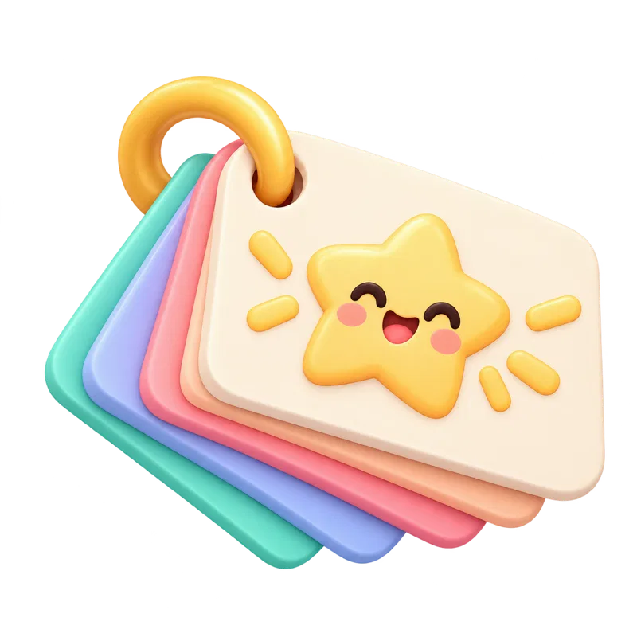

OBJECTIF DEVOIRS • STUDY POPPrêt pour ta mission ?
Un petit pas à la fois. Toutes tes matières au même endroit.
MA PROCHAINE ÉTAPE
Par quoi commencer ?Retrouve tes devoirs et avance à ton rythme.
MON PARCOURS D'APPRENTISSAGE
Trois étapes pour avancer
MON CARNET DE RÉVISIONCe que je dois revoir
Les notions que tu as trouvées difficiles, dans toutes les matières.

Tous mes outils À utiliser quand j'en ai besoin
Les cinq rubriques de la version précédente restent accessibles et fonctionnelles.
📅 Mon planning
1. Je regarde mes échéances
Je me concentre Choisis une durée, puis lance ta séance
min
2. Je note un devoir
Choisis la matière, décris précisément ce que tu dois faire, puis indique pour quand.
3. Je passe à l’action
Commence par une tâche, coche-la quand elle est finie, puis vérifie ce que tu as retenu.
Mes méthodes
Choisis ta matière puis une stratégie. L’objectif est de comprendre comment travailler, pas de recopier une réponse.
Dans quelle matière as-tu besoin d’aide ?
Mon atelier de révisions
Mémorise avec des cartes, puis vérifie ce que tu sais vraiment avec un quiz. Tu peux recommencer à ton rythme.
1. Je m’entraîne à retrouver une réponse
Lis la question, essaie de répondre sans regarder, retourne la carte, puis indique si tu savais.
2. Je vérifie mes connaissances
Choisis une discipline. Réponds aux questions avant de consulter la correction et ton résultat.
🧩 MindMaps
Mes cartes mentales
Touche un nœud pour le sélectionner · Fond = désélectionner
🏆 Mon profil
📖
0 XP
Recrue
Streak : 0 jour(s) 🔥